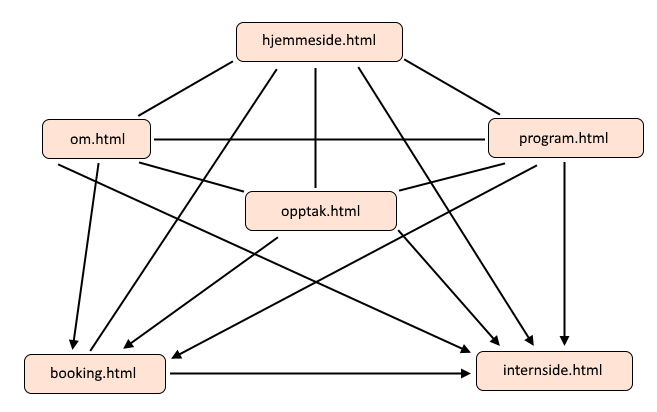

Gruppe 7 - P2
Med: Ulrik Kristoffersen, Thomas Immanuel, Simon Nymo, Marit Aasen og Kristian Fougner.
Publisert: 8.10.19
Hvem, hva hvorfor
Kunden vår er Snaustrinda Spelemannslag, representert ved Øystein Krogstie (sekretær og dataansvarlig).
Målet med siden er å presentere hvem Snaustrinda er og hva de driver med. Hovedsaklig for de som er interessert i å booke, men også for de som vil bli medlemmer. Det er også viktig at de lett skal kunne komme i kontakt om dette.
Navigasjon
Poenget med nettsiden er å få et kjapt innblikk i snaustrinda på hovedsiden og mer innhold på de andre sidene. Navigerings strukturen er bygget rundt dette.
Nettsiden vår består av fire websider som alle kan nås fra hverandre. I tillegg vil det på alle de fire websidene være linker til booking, og til internsiden for medlemmer. Internsiden drives ikke av oss, men er greit å kunne nås for medlemmer som bare er innom vår nettside.
På bunnen av hjemmesiden ligger bookingen, så den kan enten scrolles til eller bli automatisk henvist til når en trykker på en av booking linkene på de andre websidene. På figuren under er det streker for hva som linker til hverandre, og piler betyr at man bare kan bevege seg med linker i pilens retning.
Nettsidens utseende
Hjemmesiden skal ha en navigasjonsbar plassert øverst. Dette er for å gjøre det enkelt for brukeren å se hva som finnes på siden. Selve navigasjonsbaren skal bestå av spillemannslagets egen logo (som linker til hovedsiden), samt link til bookingside og en meny som inneholder resten av undersidene. Linker i navigasjonsbaren skal være røde (#FF394D) når brukeren hovrer over dem. Da både innholdet og navgasjonsbarens bakgrunnsfarge er lik (hvit), vil vi bruke ei linje til å skille mellom dem.
Nettsiden skal altså ha hvit (#FFFFFF) bakgrunnsfarge og presentere innholdet med svart (#000000) tekst. Tekstens font skal være Lucida Grande (med liknende fonter som back-up). Dette etter kundens ønske. Skriften skal ha størrelse ???.
Sidens bredde skal være 780 px. Noe mer om plassering av innhold???
Footeren skal ha svart bakgrunnsfarge med hvit tekst. Til venstre finner man linker til booking og toppen av siden og til høyre ligger linker som leder bort fra vår side, nemlig link til internsiden, samt sosiale medier (Facebook, Youtube og Instagram). Hva kalles teksten i midten der???
Innhold
Hovedisde
Hovedsiden skal være delt i fem (???) deler. Hver av dem skal kunne nås fra den forrige ved å trykke på en pil som ligger under den aktuelle delens innhold. Grunnen til at hovedsiden er strukturert slik er for å gi potensielle kunder en kort og konsis presentasjon av spillemannslaget. Dette skal forhåpentligvis friste dem til å booke Snaustrinda, noe de også får mulighet til nederst på siden.
Øverst på hovedsiden skal vi ha et bilde-slideshow (ca. 3 bilder???). Bildene skal være like brede som innholdet på siden. I bildenes "boks" skal det være prikker som viser hvor mange bilder det er og hvilket som vises akkurat nå. Skal brukeren kunne bla i bildene????
Neste del skal være en kort tekst om spillemannslaget - hvem de er og hva de gjør. For mer utfyllende informasjon så kan brukeren gå til egen underside (ved navn???). Ved å ha en kort og lett fordøyelig tekst på hovedsiden så slipper kunden å "slite seg ut" her. Dette skal være en apetittvekker, ikke en hovedrett!
Video???
Musikk???
Booking???